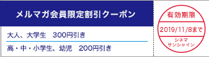
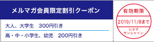

|
シネマサンシャインメールマガジン 2019/10/25号 |
 |
毎月1日は映画サービスデー
どなたさまでも1,200円でご鑑賞いただけます。 次回は来週11/1（金）です！ ※3D、4DX、IMAX、ATMOS、dts-x、ScreenXBESTIA、は別途追加料金が必要となります。 |
オススメ作品
『ジェミニマン』
10/25（金）公開
©2019 PARAMOUNT PICTURES. ALL RIGHTS RESERVED.
ウィル・スミスが現在の自分と若い自分の2役を演じ、「ブロークバック・マウンテン」「ライフ・オブ・パイ トラと漂流した227日」の名匠アン・リーがメガホンをとった近未来アクション。 史上最強とうたわれるスナイパーのヘンリーは政府に依頼されたミッションを遂行中、何者かに襲撃される。 自分の動きをすべて把握し、神出鬼没な謎の襲撃者の正体は、秘密裏に作られた若い頃のヘンリーのクローンだった。 その衝撃の事実を知ったヘンリーは、アメリカ国防情報局の捜査官ダニーの協力を得ながら、政府を巻き込む巨大な陰謀の渦中へと身を投じていく。
監督：アン・リー
出演：ウィル・スミス メアリー・エリザベス・ウィンステッド クライブ・オーウェン
出演：ウィル・スミス メアリー・エリザベス・ウィンステッド クライブ・オーウェン
公式サイト：https://geminiman.jp/
『IT／イット THE END “それ”が見えたら、終わり。』
11/1（金）公開
©2019 WARNER BROS. ENTERTAINMENT INC. AND RATPAC-DUNE ENTERTAINMENT LLC. ALL RIGHTS RESERVED
スティーヴン・キングの大人気小説を映画化した『IT／イット “それ”が見えたら、終わり』待望の続編。 前作を上回るスケールと予想外の展開――すべての謎が明らかになる――。 『IT／イット』完結！
小さな田舎町で再び起きた連続児童失踪事件。 幼少時代、“それ”の恐怖から生き延びたルーザーズ(負け犬)・クラブの仲間たちは、27年前に固く誓い合った〈約束〉を果たすために町に戻ることを決意する。 だが“それ”は、より変化自在に姿を変え、彼らを追い詰めていく――。 果たして、すべてを終わらせることができるのか！？
小さな田舎町で再び起きた連続児童失踪事件。 幼少時代、“それ”の恐怖から生き延びたルーザーズ(負け犬)・クラブの仲間たちは、27年前に固く誓い合った〈約束〉を果たすために町に戻ることを決意する。 だが“それ”は、より変化自在に姿を変え、彼らを追い詰めていく――。 果たして、すべてを終わらせることができるのか！？
監督：アンディ・ムスキエティ
出演：ビル・スカルスガルド、ジェームズ・マカヴォイ、ジェシカ・チャステイン
出演：ビル・スカルスガルド、ジェームズ・マカヴォイ、ジェシカ・チャステイン
上映作品

10/26（土）公開
『冴えない彼女（ヒロイン）の育てかた Fine（フィーネ）』
11/1（金）公開
『マチネの終わりに』
11/1（金）公開
『閉鎖病棟―それぞれの朝―』


ニュース
○シネマサンシャイン大和郡山 IMAXシアター休館のお知らせ
シネマサンシャイン大和郡山のIMAXシアターは工事の為、2019年10月28日（月）より休館となります。
営業再開の日程は、決まり次第ご案内いたします。
お客様にはご迷惑お掛けいたしますが、何卒ご了承いただけますようよろしくお願いいたします。
尚、IMAXシアターを除くシネマ１～９は通常通り営業いたします。
営業再開の日程は、決まり次第ご案内いたします。
お客様にはご迷惑お掛けいたしますが、何卒ご了承いただけますようよろしくお願いいたします。
尚、IMAXシアターを除くシネマ１～９は通常通り営業いたします。
○「シネマサンシャインららぽーと沼津」10/4（金）オープンしました！
全10スクリーン・約1,800席、最新の映画上映設備を備えたシネマコンプレックスとして「三井ショッピングパーク ららぽーと沼津」内にオープンいたします。 プレミアムシアターとして全世界的な評価を集めるIMAX社の最新鋭シアター「IMAXレーザー」。 体感型アトラクションシアター「4DX」と、3面マルチプロジェクション上映システム「ScreenX」が融合した超・体感型シアター「4DX with ScreenX」。 佐々木興業オリジナル開発の劇場規格「BESTIA（ベスティア）」など、最先端のシネマテクノロジーが結集した新世代のシネマコンプレックスです。

○シネマサンシャイン「おやこシネマ」続々開催決定！
子育て中のママ、パパがお子さま連れで一緒に映画を鑑賞できる上映会を開催いたします。
小さいお子さま連れでの映画鑑賞は…
「びっくりして泣いてしまったら…」
「暗いので子供が怖がるかも…」
「子供がおしゃべりしたり歩き回るかも…」
そんな不安や心配がつきないママ、パパの為の上映会です。
音量が通常よりも小さめで、照明も明るめに設定されており、
小さなお子様でも怖がることなくご鑑賞いただけます。
今後の実施は下記となります。
10月29日(火)『マレフィセント２』
11月26日(火)『アナと雪の女王２』※沼津、重信のぞく
11月26日(火)『決算！忠臣蔵』※沼津、重信のみ

小さいお子さま連れでの映画鑑賞は…
「びっくりして泣いてしまったら…」
「暗いので子供が怖がるかも…」
「子供がおしゃべりしたり歩き回るかも…」
そんな不安や心配がつきないママ、パパの為の上映会です。
音量が通常よりも小さめで、照明も明るめに設定されており、
小さなお子様でも怖がることなくご鑑賞いただけます。
今後の実施は下記となります。
10月29日(火)『マレフィセント２』
11月26日(火)『アナと雪の女王２』※沼津、重信のぞく
11月26日(火)『決算！忠臣蔵』※沼津、重信のみ
○4DX追加料金が高校生以下半額の500円に！【期間限定】
シネマサンシャインの4DXシアターでは、現在キャンペーン期間中につき高校生以下（高校生・中学生・小学生・幼児）の4DX追加料金（通常 1,000円）が半額の500円になります！
通常鑑賞料金（1,000円）＋4DX追加料金（500円）＝1,500円
※3D作品の場合は上記にさらに400円が加算されます。
※一部特別興行は適用とならない場合があります。
※無料鑑賞（アプリ会員のポイントによる無料鑑賞、招待券等）は適用外。
▼シネマサンシャイン4DXシアター導入劇場はこちら
グランドシネマサンシャイン、平和島、沼津、ららぽーと沼津、大和郡山、北島、エミフルMASAKI、姶良

通常鑑賞料金（1,000円）＋4DX追加料金（500円）＝1,500円
※3D作品の場合は上記にさらに400円が加算されます。
※一部特別興行は適用とならない場合があります。
※無料鑑賞（アプリ会員のポイントによる無料鑑賞、招待券等）は適用外。
▼シネマサンシャイン4DXシアター導入劇場はこちら
グランドシネマサンシャイン、平和島、沼津、ららぽーと沼津、大和郡山、北島、エミフルMASAKI、姶良
○シネマサンシャインの新しい会員サービス『シネマサンシャイン リワード』スタート！
もっともっとオトクに映画を観よう！６ポイントで１回鑑賞無料！毎週木曜は1,100円鑑賞などお得なサービスがいっぱいです！シネマサンシャインアプリから新しい会員サービスへ登録いただけます。 是非ご登録ください。
全劇場で対応開始！
※年会費500円あり
全劇場で対応開始！
※年会費500円あり

○メルマガ会員限定割引クーポンプレゼント！
メルマガ会員様限定でお得な割引クーポンをプレゼント！
以下の画面をチケット購入時にご提示ください。
PCでご覧のお客様は該当部分を印刷してご提示ください。

以下の画面をチケット購入時にご提示ください。
PCでご覧のお客様は該当部分を印刷してご提示ください。

※有効期限は11月8日までになります。
※割引券1枚で2名様まで有効。 他の割引サービスとの併用はできません。
※特別興行などご利用いただけない場合がございます。
※インターネット購入（e-box、ムビチケ)ではご利用いただけません。
※期間中何回でもご利用頂けます。
池袋、ユーカリが丘、大和郡山、北島、下関、姶良の自動券売機では下記QRをご利用ください。
【一般・大学生】
【高校生以下】
【一般・大学生】
【高校生以下】
ムービークイズ
○前回のクイズ
10/18公開『マレフィセント2』に出演しているエル・ファニングのお姉さんは、『I am Sam アイ・アム・サム』出演の天才子役ダコタ・ファニングですが、「フィフティ・シェイズ」シリーズ主演のダコタ・ジョンソンの義父(お母様の再婚相手)は誰でしょう。
ヒント：有名俳優です！
10/18公開『マレフィセント2』に出演しているエル・ファニングのお姉さんは、『I am Sam アイ・アム・サム』出演の天才子役ダコタ・ファニングですが、「フィフティ・シェイズ」シリーズ主演のダコタ・ジョンソンの義父(お母様の再婚相手)は誰でしょう。
ヒント：有名俳優です！
答え：アントニオ・バンデラス
お母様は女優のメラニー・グリフィス、実父は俳優のドン・ジョンソンの俳優一家です。
お母様は女優のメラニー・グリフィス、実父は俳優のドン・ジョンソンの俳優一家です。
○今回のクイズ
11/1公開『IT／イット THE END “それ”が見えたら、終わり。 』で共演するビル・スカルスガルドとジェームズ・マカヴォイは「IT／イット」前作以外にも共演作があります。 その作品はなんでしょう。
11/1公開『IT／イット THE END “それ”が見えたら、終わり。 』で共演するビル・スカルスガルドとジェームズ・マカヴォイは「IT／イット」前作以外にも共演作があります。 その作品はなんでしょう。
答えは、次回のシネマサンシャインメールマガジンで！